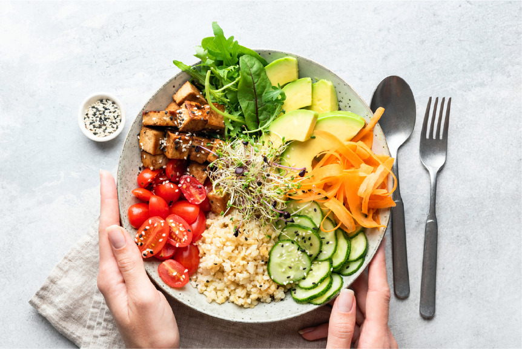

La Alimentación:
Tu ritual de belleza

Aunque nos cueste aceptarlo, la piel es el reflejo de nuestra alimentación, por lo que debemos prestar especial atención a lo que ingerimos diariamente y que podría producir efectos inflamatorios en ella.
Tal es el caso de los alimentos que contienen altos niveles de glucosa que producen inflamación y oxidación de proteínas, lípidos y ácidos nucleicos en la sangre (AGEs). Esto genera el deterioro de nuestros tejidos reflejando la apariencia de arrugas en la piel.
La buena noticia es que podemos revertir el daño ocasionado en nuestra piel (y todo nuestro organismo). Consumiendo una dieta rica en nutrientes que aporten a mejorar nuestra salud y a frenar los signos del envejecimiento prematuro.
Los alimentos claves para luchar contra el envejecimiento y que tienen efectos beneficiosos para todo nuestro organismo, son las verduras de hoja verde (mejor crudas que cocidas), los frutos rojos, las plantas aromáticas, el té verde, el salmón, la avena, el cacaco, el aceite de oliva, la palta, entre otros.
Por otro lado, tratemos de evitar el consumo de alimentos que contienen altos niveles de azucar como los pasteles, los jugos en general, las gaseosas, las papas, el pan, los fideos. ¿Ya estás lista para empezar con tu ritual?